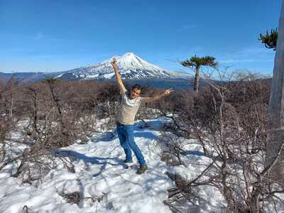

Parque Nacional Conguillío
Sendero Sierra Nevada
- 
El Parque Nacional Conguillío debe ser uno de los lugares más extraordinarios que puede ofrecer Chile a los amantes de la naturaleza.
Con 2 grandes y espectaculares volcanes como el Llaima y la Sierra Nevada, lagunas por todas partes, grandes bosques con muchas araucarias,
variada fauna, entre otros atractivos, es un imperdible para cualquiera que quiera conocer el sur de Chile.
De la gran variedad de alternativas que ofrece el parque para recorrerlo, sin duda, que el sendero al Mirador de la Sierra Nevada
es una de las opciones más accesibles y con mayor variedad de paisaje como para darse una buena idea de la gran
riqueza natural que existe en este lugar.
El sendero parte junto a una de las más hermosas playas del lago Conguillío, atraviesa un espectacular bosque
nativo que posee varios miradores hacia el lago y culmina en un gran mirador despejado, fuera del bosque que
ofrece grandes vistas tanto al volcán Llaima como al lago Conguillío. Curiosamente, a pesar de su nombre, no
hay muchas vistas desde el mirador hacia la Sierra Nevada, por cuyas laderas transcurre la ruta, pero que no
alcanza a mostrar la maginificiencia de este volcán y sus grandes glaciares.
ÉPOCA ADECUADA
De octubre a mayo. En invierno puede haber abundante nieve en la ruta y también en los accesos al parque.
Acceso al Parque Nacional Conguillío
El Parque Nacional Conguillío es accesible desde Temuco o el Norte por Victoria o Lautaro hacia el pueblo
de Curacautín. Son 84km de camino asfaltado. Desde Curacautín hasta la guardería Captrén son 34km, de los
cuales los 10 primeros están asfaltados. Desde la guardería Captrén son 8 km por camino de tierra hasta el
lago Conguillío, sólo habilitados cuando no hay nieve.
También es posible acceder al parque desde el Sur, por la ruta Temuco - Cunco hacia el pueblo de Melipeuco
(91km camino asfaltado), luego son 9km hasta la guardería Truful Truful. Desde aquí 20km entre
planicies de lava y bosques de nothofagus hasta el bosque de araucarias y el lago Conguillío.
Transitable todo el año, en condiciones invernales acceso coordinado con Sendas (concesionario
privado del parque).
Transporte público hasta Melipeuco durante el año. En verano los domingos hasta el parque.
Otro acceso es por el lado occidental, desde Temuco por camino Cajón - Vilcún - Cherquenco -
Sector Los Paraguas. Está asfaltado desde Cajón hasta Cherquenco, el resto ripiado,
transitable todo el año excepto días de nieve, por lo cual se debe usar cadenas y doble tracción.